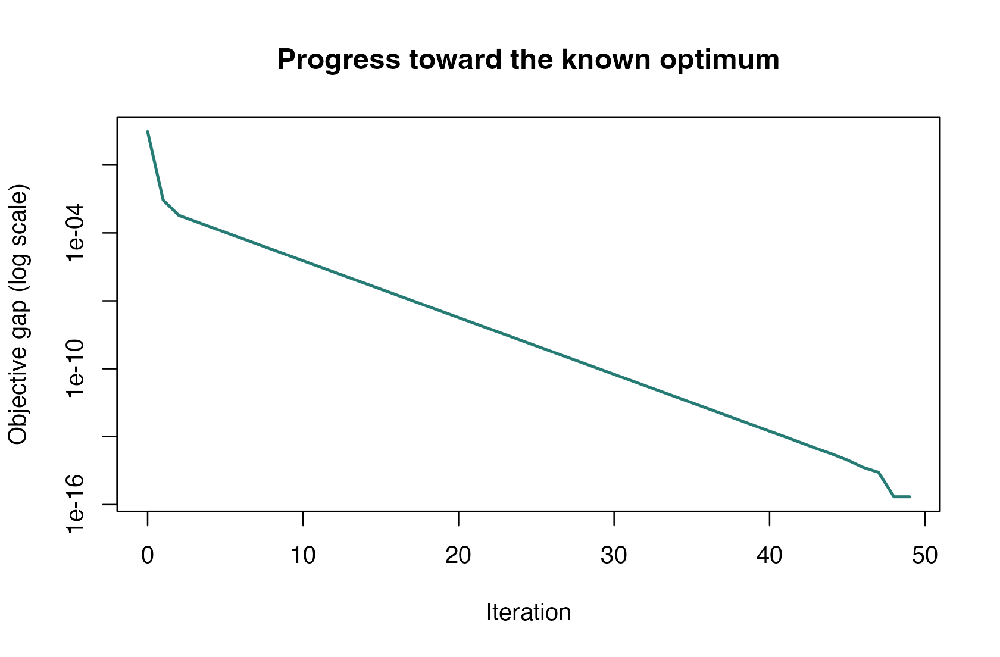

Find a principal direction on the sphere
Source:vignettes/articles/example-sphere-pca.Rmd
example-sphere-pca.RmdThe first principal component is a unit vector that captures as much
variation as possible. That unit-length constraint makes the sphere a
natural search space. This example writes PCA as an optimization
problem, solves it, and checks the answer against R’s
eigen() function.
We use two measurements from the built-in iris data so
the result is easy to draw. The measurements are centered but kept in
their original units.
Build the objective
X <- scale(as.matrix(iris[, c("Sepal.Length", "Petal.Length")]),
center = TRUE, scale = FALSE)
C <- crossprod(X) / nrow(X)
sphere <- manifold.sphere(2)
covariance <- torch_tensor(C, dtype = torch_float64(), device = "cpu")
problem <- riem.problem(
sphere,
function(q, data) -(q * data$matmul(q))$sum(),
data = covariance
)For a unit vector
,
the projected variance is
.
The solver minimizes its negative. riem.problem() obtains
the gradient by automatic differentiation, and the geometry converts it
to a tangent vector on the sphere. Registering the covariance through
data lets the execution driver place it on the same device
as the point.
Solve and inspect the result
initial <- torch_tensor(c(1, 0), dtype = torch_float64(), device = "cpu")
fit <- riem.optimize(
problem, initial, method = "conjugate_gradient",
control = list(max_iterations = 100, gradient_tolerance = 1e-7),
device = "cpu"
)
fit
#> <riem_fit> conjugate_gradient on sphere
#> Objective: -3.6374861 | gradient norm: 1.949e-08
#> Termination: converged_gradient | iterations: 49The examples on this site explicitly select CPU and float64 for
reproducibility. For automatic device discovery on your workstation, use
device = "auto". You can always keep
device = "cpu" to override an available CUDA GPU.
Check against the eigensystem
The sign of a principal direction is arbitrary: and describe the same line. Compare their absolute inner product rather than their signed entries.
reference <- eigen(C, symmetric = TRUE)
direction <- as.numeric(fit$point)
agreement <- abs(sum(direction * reference$vectors[, 1]))
captured <- -fit$objective / sum(diag(C))
data.frame(
check = c("Unit-length error", "Direction agreement", "Variance captured"),
value = c(abs(sum(direction^2) - 1), agreement, captured)
)
#> check value
#> 1 Unit-length error 2.220446e-16
#> 2 Direction agreement 1.000000e+00
#> 3 Variance captured 9.631579e-01
stopifnot(riem.belongs(sphere, fit$point), agreement > 1 - 1e-10)The variance fraction is for these two centered measurements. It is not the variance fraction for all four iris measurements or for standardized data.

The optimized direction follows the strongest variation in the two measurements.
Read the convergence history
The result retains the objective and metric gradient norm at each iteration. Here the known optimum is minus the largest eigenvalue, so we can also measure the objective gap directly.
iteration <- vapply(fit$history, function(record) record$iteration, numeric(1))
objective <- vapply(fit$history, function(record) record$objective, numeric(1))
gap <- pmax(objective + reference$values[1], .Machine$double.eps)
plot(iteration, gap, type = "l", log = "y", lwd = 2, col = "#267C74",
xlab = "Iteration", ylab = "Objective gap (log scale)",
main = "Progress toward the known optimum")
The objective approaches the independently known optimum.
The plotted gap is clipped at machine precision because subtraction
near the optimum is affected by floating-point rounding. The solver’s
stopping criterion uses the gradient norm. For several principal
directions together, use manifold.grassmann() and an
orthonormal matrix-valued point.
Try the penguin subspace application to fit two directions from public measurements and compare a finite-sum solver. Browse all ten applications and introductions in the example gallery.